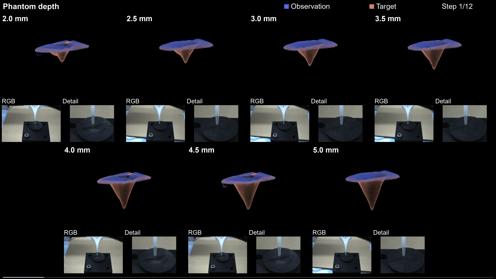
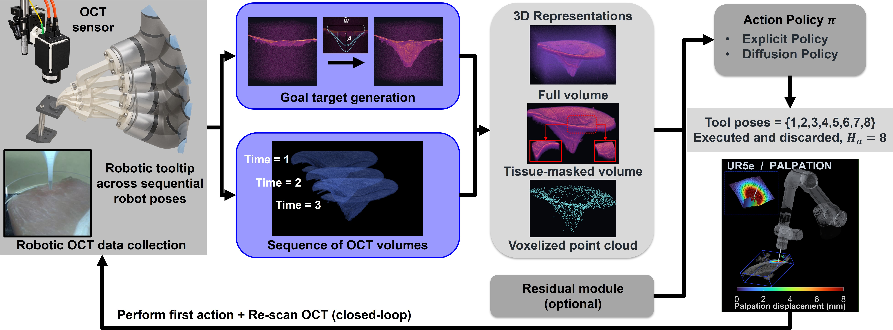

Robotic Optical Coherence Tomography-Guided Geometric Modeling of Soft Tissue
3D Representations for Data-Driven Closed-Loop Shape Control
University of Michigan, Ann Arbor

Abstract
In medical robotics, data-driven soft-tissue shape control requires deforming tissue toward desired morphologies through sequential physical interactions. This challenge is particularly important in microscale manipulation, where localized deformation is difficult to observe, represent, and control, while physics-based models can be computationally expensive and difficult to adapt to realistic environments. Optical coherence tomography (OCT) provides high-resolution volumetric perception of tissue deformation, but target-conditioned control requires effective representations of both observed and desired tissue states. In this work, we introduce an OCT-guided data-driven framework for tissue shape control, learned from user-guided demonstrations and executed with closed-loop OCT feedback. We study full-volume, tissue-masked sparse-volume, and voxelized point-cloud representations, with or without residual conditioning, using deterministic (Explicit) and generative diffusion (Diffusion) policies. Across 12 configurations and 576 phantom rollouts on 3-DoF depth and 6-DoF directional tasks, OCT-derived 3D representations support both Explicit and Diffusion policies, with performance depending on representation and residual conditioning. Residual conditioning reduces directional Shape RMSE from 0.748 to 0.555 mm for full-volume Diffusion, while voxelized point-cloud Explicit with residuals achieves 0.534 mm for depth and 0.443 mm for directional control, with comparable accuracy at intermediate unseen targets and consistent performance across deployments. We further evaluate the framework in 60 ex vivo porcine rollouts, extending to biological tissue with final geometric errors comparable to human demonstrations. These results establish volumetric OCT as current and goal representations for learned closed-loop tissue shape control across deterministic and generative action models.
Closed-loop tissue deformation

Closed-loop phantom deformation toward different target depths. Blue: observation; salmon: target. RGB shows the same recorded step.
Method overview

Three OCT representations
Loading recorded OCT geometry…
Phantom results
Twelve configurations are evaluated in 576 closed-loop rollouts over three deployment sweeps. Lower Shape RMSE indicates closer observed and target tissue geometry.
View numerical comparison
| Representation | Policy | Depth | Directional |
|---|
Residual conditioning lowers final error in nine of twelve matched comparisons.
Code
Preprocessing, training, validation, and checkpoint inference in one PyTorch package.
- Source code PyTorch implementation with training configurations.
Citation
@misc{zhang2026octshapecontrol,
title = {Robotic Optical Coherence Tomography-Guided Geometric Modeling
of Soft Tissue: 3D Representations for Data-Driven
Closed-Loop Shape Control},
author = {Zhang, Chaoyu and Ma, Guangshen and Draelos, Mark},
year = {2026},
note = {Manuscript}
}